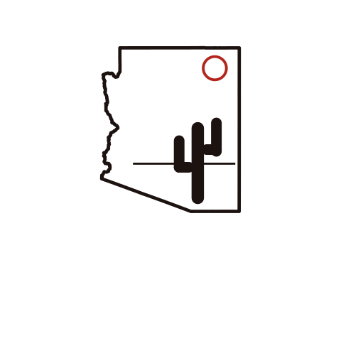

Live · publishing daily
StateForty8 Sports
A daily roundup across twelve leagues — NFL, CFB, NBA, NCAAM, WNBA, NCAAW, MLB, NHL, UFC, Boxing, Golf, and Horse Racing. One email a day, no filler, every story linked back to its source.
- Designed the identity from scratch: a saguaro inside the Arizona outline, with a sun-ring accent and two colorways that swap with the site theme.
- Built the front-end by hand — no framework, no build step. Per-league color coding, dark/light toggle, sub-second loads.
- Wrote the pipeline: multi-source news ingestion, a daily post generator, and a newsletter send that goes out on its own.
- Added a weekly audio recap with playback-speed controls, generated from the week's headlines.